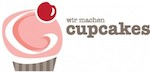

Servus Bayern!
Rails Girls is returning to Munich! During the free workshop we'll explore the magical world of Ruby on Rails, and build an application together, perhaps even with a little sprinkle of Christmas joy for good measure.
Applications for the workshop are now closed. Follow us on Facebook and Twitter for information on upcoming events and meetups
You learn designing, prototyping and coding with the help from our coaches.
You need your own laptop, curiosity and a sprinkle of imagination!
Want to help? We are looking for volunteers and Rails coaches. Email the Rails Girls Munich team.
| 18.00 - |
Installation partyGet to know the attendees a little bit before hand. Bring your laptop if you can, so we can install Ruby on Rails for you.Where: Propertybase GmbH Offices |
|---|---|
| 21.00 - |
Coach dinnerAll of the coaches are welcome to come to our coach dinner, where we'll go through the program for the next day. |
| 9:00 - 10:00 |
Registration, coffee and installation festDuring the morning we’ll install Ruby on Rails on your computer. |
|---|---|
| 10:00 - 10:15 |
WelcomeOutline of the day & word from sponsors |
| 10:20 - 10:45 |
Designing your web app -workshop |
| 10:50 - 11:10 |
Tryruby.orgLet's get coding! |
| 11:10 - 13:00 |
WORKSHOPJumpstart your first web application |
| 13:00 - 13:30 | Lunch |
| 13.30- 13:45 |
Bentobox - Understanding Web AppsRecap of what we’ve been learning and how it all fits together in the bigger picture of programming. |
| 13:45 - 14:30 |
Lighting talks from coaches |
| 14:30 - 16:30 |
WORKSHOPExtend your application. |
| 20:00 - |
AfterpartyOpen for everyone, meet cool people interested in tech. |
Applications close: November 15th
Acceptances informed: November 17th
Location: Propertybase GmbH, Landwehrstraße 63, 80336 Munich
Rails Girls Munich needs the support of awesome partners.
Want to help? We're looking for partners & sponsors for the non-profit event! Email us!
 Propertybase is a lean, fast-growing technology company headquartered in Munich, Germany. Our Propertybase software is the leading cloud-computing CRM platform for real estate companies.
Propertybase is a lean, fast-growing technology company headquartered in Munich, Germany. Our Propertybase software is the leading cloud-computing CRM platform for real estate companies.
Inovex provides IT and engineering support to companies large and small, specializing in Social Integration, Web und Mobile Engineering, Business Intelligence und Big Data, Cloud und Data Center Management.
Linux Magazin is the leading German Magazin on Open Source and Linux.
O'Reilly Verlag is the resource for technical, development and educational literature.
 Unerdwear are long time friends with Rails Girls, and Velociraptor advocates. Born in Poland as a simple comfortable pair of boxers for nerds, unerdwear have become the world wide leaders in undergarments for the discerning techie.
Unerdwear are long time friends with Rails Girls, and Velociraptor advocates. Born in Poland as a simple comfortable pair of boxers for nerds, unerdwear have become the world wide leaders in undergarments for the discerning techie.
 Stylight is the best place to discover fashion every day. Millions of people use STYLIGHT’s website and app every month to get inspired by looks created by the community and discover great products from amazing brands.
Stylight is the best place to discover fashion every day. Millions of people use STYLIGHT’s website and app every month to get inspired by looks created by the community and discover great products from amazing brands.
Mari is Mate + Riesling + Holunder. Founded in 2011, Mari is new on the scene. With a unique flavour, that's bound to have you hooked. Mari is supporting the Rails Girls Munich afterparty through a generous donation of Mari drinks and merchandise. Belebt natürlich - Join the Lama.
 Wir Machen Cupcakes is Munich's first and only cupcake store. Supporting a number of local events through sponsorship and support, Wir Machen Cupcakes are big fans of the Rails Girls cause, and love to make sure particpants get some suga' at the afterparty.
How much does the workshop cost? Nothing, it's free! You just need to be excited!
Who is this workshop for? Women of any age with basic knowledge of working with a computer. We’ve had people of all ages taking part. Talks will be conducted in English, but you are free to work in German amongst your group. Please bring your laptop.
Can men attend? Yes, but you need to be accompanied by an interested lady. Also, girls are given a priority.
I know how to program - How can I help? We’re also looking for people to be coaches! We’ll have a two-three hour workshop before the event to walk you through the curriculum. Email us